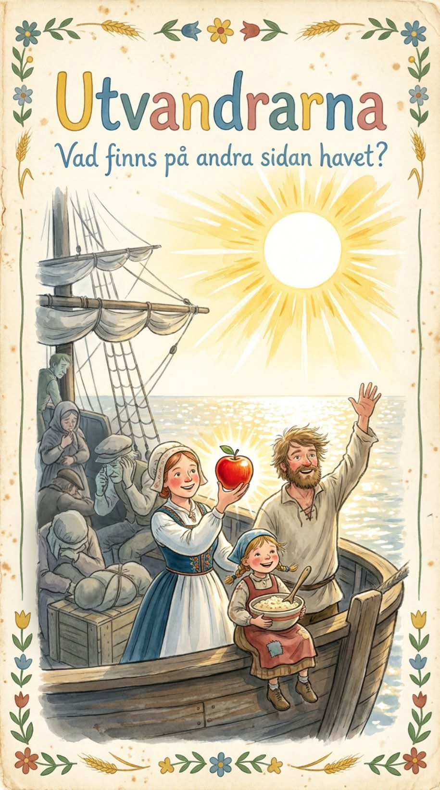

Förbered dina barn för vuxenlivet med cyniska sagor! Med Cyniska sagor kan även de yngsta lära sig räkna rätt med Storebror, sätta sina överlevnadstrategier på prövning tillsammans med Buck eller utforska den nya världen med Karl Oskar och Kristina. Cyniska sagor är en bilderboksserie med äventyr för barn i alla åldrar.

04 · 10 — UTVANDRARNA, VILHELM MOBERG
Verken i sviten
Processen
Glaskupan
Skriet från vildmarken
Utvandrarna
1984
Ett dockhem
Äcklet
Mästaren och Margarita
Främlingen
Brott och straff
14 november
KL 22–SENT · FRI ENTRÉ
KAFE 44, Tjärhovsgatan 46, Södermalm, Stockholm
DIN UTOMPARLAMENTARISKA MYSHÖRNA
Gratis, frihetlig och socialistisk förtäring • Musik av Asta Kask, publikfavoriter ur Kravallsymfonier 78–86.